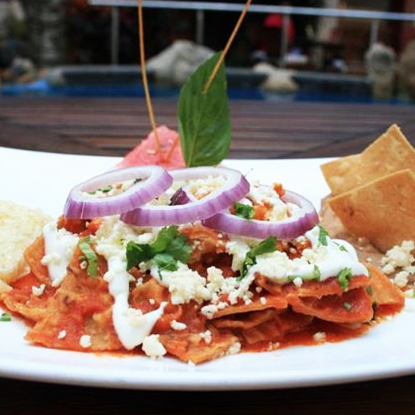
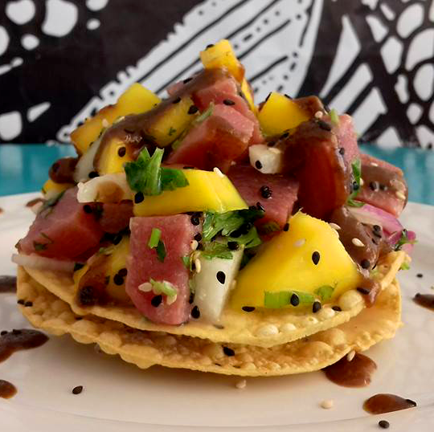

Where to Eat


Street food can be found primarily in the two regions marked in blue below. Almost all of the street food carts are open only in
the early afternoon to evening.
The staff working at the street carts in Puerto Vallarta can speak really good English. The carts are fairly clean, and many offer hand sanitizer or actual sinks.
The street carts along the beach offer
+ Elote in various flavors with mayo and cheese. This is grilled corn sliced off the cob. Some are tossed with lime and/or some type of Chile pepper, then topped with mayo and cheese. It’s the best version of corn on the cob
+ Agua frescas - flavors like lemon with chia seeds, Jamaica (hibiscus), horchata, Maracuja, and creamy strawberry
+ Cake - avoid these. Most of these are store bought and sliced up in front of you. Think Ralph’s or Costco quality cake
+ Pregnant shrimp - marinated and grilled seafood skewers
+ Hot dogs and hamburgers - thick, heavily spiced sausages sometimes wrapped in bacon and traditional or Mexican hamburgers. A Mexican hamburger is just a slice of flank steak instead of a ground beef patty
+ French fries and cut up sausages in trays
+ Fresh, homemade helados
The street carts further in town offer
+ Tacos - asada, al pastor, chorizo, etc. as well as a variety of seafood such as grilled or battered fish, shrimp. Interestingly, lengua didn’t show up on most menus
+ Tostadas -
+ Sopes
+ Tamales
+ Churros
+ Fresh young green coconuts
+ Fresh fruit cups - strawberries, raspberries, pineapple, etc.
Before the evening, only smoothie and fruit carts are open
Between Thursday - Sunday, the main square in town will host even more food stands from hamburguesa (hamburgers) to enchiladas to dulce stuffed churros.
Restaurants directly on the beach are passes for us. Most are relying entirely on their location and view to entice patrons. If that fails, they’ll try and lure you with 2x1 specials on watered down drinks or cheap beers.
As of Nov. 2017, Yelp and TripAdvisor are currently very incomplete. There are a number of businesses with < 10 reviews or aren’t listed at all.
What to order
Situated along the coast, Puerto Vallarta has no shortage of fresh seafood. The region is particularly famous for Aguachile, a type of raw marinated shrimp. Smoked marlin will make an appearance on a number of menus from food stands to high end restaurants.
Menu words and phrases to know
Aguachile* -
Al pastor - marinated pork, often served with chunks of pineapple
Birria -
Camaron - shrimp
Cerveceria - bar
Cerveza - beer
Ceviche - raw marinated seafood
Chorizo - Mexican sausage
Coco - coconut
Dulceria - candy shop
Elote - corn, generally grilled corn on the cob
Fresa - strawberry
Hamburguesa - hamburgers
Helados - frozen ice creams and popsicles
Horchata - cinnamon rice drink
Jamaica (pronounced HAmaica) - hibiscus flower, usually brewed into a naturally caffeine free herbal tea. When you order this, it is generally already sweetened
Jugos - fruit juice
Maracuja - passion fruit
Machaca - beef, similar to hash
Mariscos - seafood
Mexican hamburger - similar to a traditional hamburger, but with a slice of flank steak instead of a ground beef patty
Molcajete* -
Mole -
Panaderia - bakery
Panela* - fresh cheese
Pina - pineapple
Pescado - fish
Pulpo - octopus
Repasado* - a type of tequila aged in oak barrels
Sopa - soup
Sopes - masa ___
Salpicon -
Tostada -
Pregnant shrimp*
* notable foods in Puerto Vallarta
El Jacalito
Massive seafood platters larger than your head for around $10
Wait time: No more than 20 minutes
Accepts credit cards: Yes
What to order:
The lobster combination platter comes with shrimp, grilled marinated chicken, and TWO lobster tails.
There are veggies too, but I feel like it was almost a waste of time typing that out. The crispy coconut
battered shrimp come with a dippable side of tropical mango sauce. Or get some locally caught mahi mahi
topped with their special creamy seafood sauce; the sauce is loaded with even more seafood. The big portions
apply to their drinks too, so feel free to indulge in their full bar.
Coexist Bistro
Tucked inside Hotel Rio, this chill spot is perfect for brunch and is a great escape from the heat.
Wait time: No more than 15 minutes, they do take reservations
Accepts credit cards: Yes
What to order:
For a savory breakfast, you can’t go wrong with the chilaquiles or creamy shrimp enchiladas suizas or
opt for some basic french toast or sweet crepes. For something lighter, grab a glass of fresh squeezed
green juice or a fruit platter.
Lamara
A must for seafood lovers, fresh bright ingredients are the focus of these creative dishes
Wait time: Either go right when they open or during off peak hours to avoid lines
What to order:
Any and all of their ceviches. The aguachiles are a must as well.
Santo Tacote
Almost all the breakfast joints in PV are pretty touristy, and this one is no exception, but
don’t let that detract you from the solid food.
Wait time: almost none
What to order:
Order the best of both worlds - a traditional American or authentic Mexican breakfast.
Feel free to order classica pancakes, omelets, burgers or eat like a local and order a shrimp
& mushroom torta, fish tacos, or their famous choirzo.
El Carboncito
This taco shop is a favorite of locals. It is absolutely no frills but you’re here for the tacos and the tacos only!
Wait time: After 7 PM, the wait is basically nonexistent. Just grab a seat and wait till someone comes by to take your order.
What to order:
They offer typical meat options - al pastor, carne asada, chorizo, chuleta, arrachera, bistec,
tripa, suadero - but their specialty is the al pastor. Feel free to mix and match with your favorites.
There’s a great self serve salsa bar, and just know their hot salsa is absolute fire.
Churros
Just a man and his churro stand. Find him on the corner of Lazaro Cardenas and Aguacate, right by the church.
Wait time: 5-10 minutes
What to order:
Churros, obviously. Made to order you can order exactly how many you’d like for 2 pesos apiece.
Overestimate though because they’re absolutely irresistable, piping hot they are crisp, but chewy on
the inside with the perfect balance of sweetness. Each churro is about four inches long, not the footlong
ones Americans are accustomed to at fairs and movie theatres.
Mariscos el Colera
Generous portions of delicious traditional food, a great laid back vibe, and wallet-friendly prices
Wait time: Almost none
What to order: Three shrimp empanadas come in an order with a side of rice and creamy salad. A side of crema
fresca and a dash of hot sauce are the perfect complement to the flaky buttery empanada crust. The shrimp any
style entree is an amazing deal 220 pesos for almost two dozen medium shrimp, rice, beans, salad, and garlic bread.
Lastly, get the crab tostada for an intense sweet, tangy, savory burst of flavor.
Marisma Fish Tacos
The most famous seafood street taco cart and a place well deserving of this notoriety.
Wait time: Almost none
What to order:
You could get the grilled fish or shrimp, but that’s no way to spend your vacation! Go for that deep fried
goodness - seafood lightly battered and fried sprinkled with some shredded cabbage on top of a fresh made tortilla.
These are just begging for a drizzle of house made salsas. The smoked marlin tacos are very smoky, and definitely
unique but a bit chewy and dry. I’d recommend just getting one just to try. The quesadillas are also worth ordering,
but I’d skip the tostadas as there are just better places for that in PV.